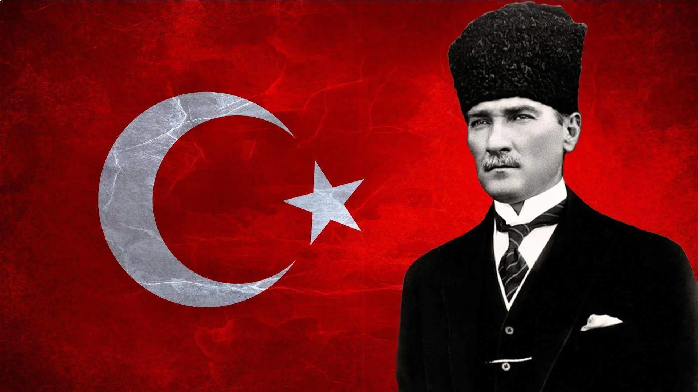

1. Önce videoyu dikkatle izle, bilgiler orada saklı! 📺
2. İzledikten sonra "Keşfe Başla" butonuna bas.
3. Karanlık alanda el fenerini gezdirerek gizli soru işaretlerini (?) bul.
4. Her doğru cevapta zaman kazanırsın, ama yanlış cevapta baştan başlarsın! ⚠️
Zaman bitti veya yanlış cevap verdin.

Anıtkabir'in tüm sırlarını başarıyla çözdün ve görevini tamamladın.